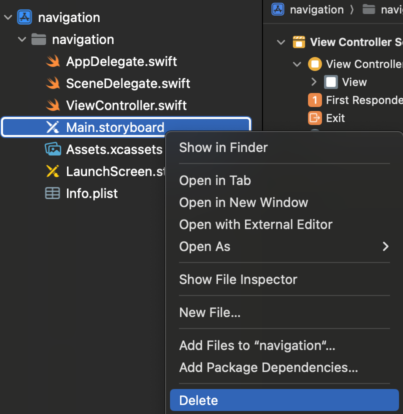
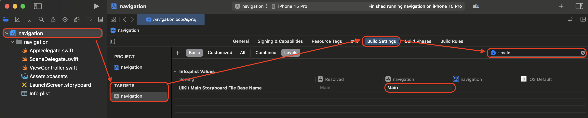
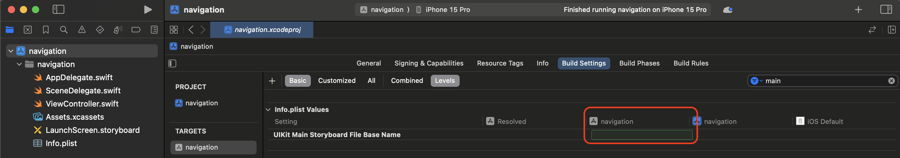
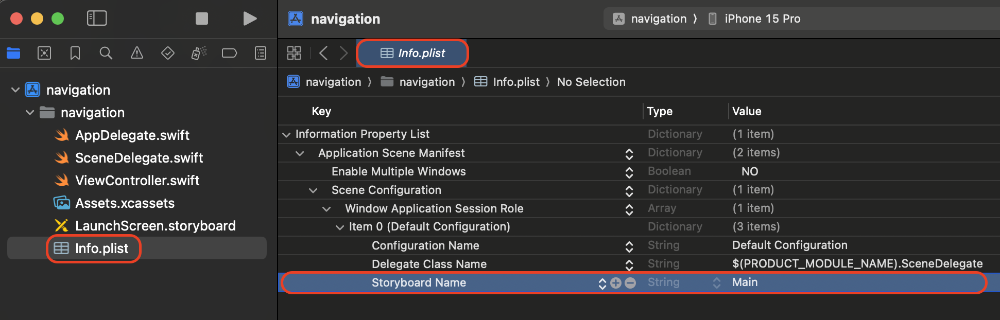
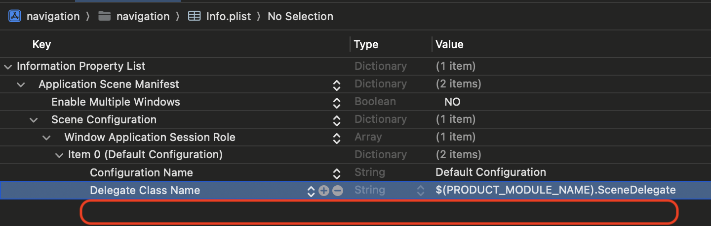
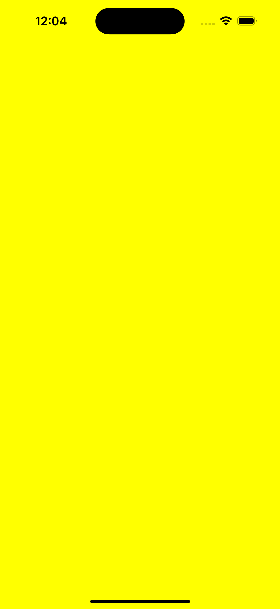

[UIKit] Code Base를 위한 main storyboard 삭제하기
Code Base를 위한 main storyboard 삭제하기
- 코드를 기반으로 UI를 구성하기위해 main Storyboard 삭제 방법입니다.
1. Main Storyboard 삭제
- Main Storyboard를 삭제합니다. 
2. Build Setting 변경
- Build Settings에서 main를 검색해서 UIKit Main Storyboard File Base Name 삭제합니다.
- UIKit Main Storyboard File Base Name 항목은 남아있고 text만 지워집니다.
삭제 전

삭제 후

3. Info.plist 변경
- Storyboard Name을 삭제합니다.
- 한줄이 모두 삭제 됩니다.
삭제 전

삭제 후

4. SceneDelegate.swift 파일 코드 수정
- 첫 화면을 보여줄 컨트롤러 지정해주기
- NavigationController나 TabBarController를 rootViewController로 가지고 싶다면 SceneDelegate 파일에서 아래 함수를 추가로 수정해야합니다.
수정 전
func scene(_ scene: UIScene, willConnectTo session: UISceneSession, options connectionOptions: UIScene.ConnectionOptions) {
// Use this method to optionally configure and attach the UIWindow `window` to the provided UIWindowScene `scene`.
// If using a storyboard, the `window` property will automatically be initialized and attached to the scene.
// This delegate does not imply the connecting scene or session are new (see `application:configurationForConnectingSceneSession` instead).
guard let _ = (scene as? UIWindowScene) else { return }
}
수정 후
func scene(_ scene: UIScene, willConnectTo session: UISceneSession, options connectionOptions: UIScene.ConnectionOptions) {
// Use this method to optionally configure and attach the UIWindow `window` to the provided UIWindowScene `scene`.
// If using a storyboard, the `window` property will automatically be initialized and attached to the scene.
// This delegate does not imply the connecting scene or session are new (see `application:configurationForConnectingSceneSession` instead).
//수정 전
//guard let _ = (scene as? UIWindowScene) else { return }
//수정 후
guard let windowScene = (scene as? UIWindowScene) else { return }
window = UIWindow(windowScene: windowScene)
window?.rootViewController = ViewController()
window?.makeKeyAndVisible()
}
5. 실행 확인
- 실행 유무를 확인하기 위해 배경을 노란색으로 변경하였습니다.
import UIKit
class ViewController: UIViewController {
override func viewDidLoad() {
super.viewDidLoad()
view.backgroundColor = .yellow
}
}

마무리
- 이제 코드베이스로 시작해봅시다!